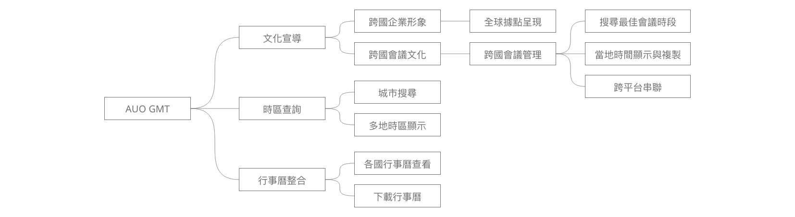

AUO Global Meeting Time
A website designed to schedule meetings across timezones and cultivate global awareness within the company
Overview
AUO has offices worldwide, and it's crucial to ensure equitable treatment for each location. Therefore, meeting scheduling shouldn't consistently prioritize the headquarters. However, arranging meetings across various time zones can be complex. This website aims to simplify the organization of cross-timezone meetings and enhance global awareness among all AUO staff members.
Challenges
1. Vividly portray AUO and its subgroups as a global company through consistent branding, international office highlights, and a clear commitment to serving a worldwide customers at first glance.
2. Enable users to search and compare timezones for multiple locations, including AUO offices, providing a convenient tool for scheduling meeting time efficiently.
3. Design an intuitive interaction that adapts to various screen sizes, catering particularly to users who travel frequently and engage with it on-the-go.
Timeline
2023/09-now
My role
UIUX design
Interview
To gain a deeper understanding of user needs, I conducted interviews with two distinct user groups: individuals who regularly schedule meetings across international offices and those responsible for cultivating global awareness within the company. I utilized the collected data to design comprehensive flows and wireframes.
Key Findings
- 預約會議久了會知道哪些時間大概是可以的，除非超過4-5個時區以上才會去查，但還是不記得確切的時差跟單點假日。
- 時間上習慣以台灣為主，因為會議預約系統的時間也是預設總部的視角，但時間發出去對方可能會搞錯是當地時間還是台灣時間。
- 先以主要角色的時間為主，不同地區的話就以大家都是上班時間，不然就是輪流。
- 通常約好時間之後要再去會議預約系統預定線上會議時間，再把連結放在會議通知裡面，同時約實體會議室，常需要跨平台作業。
- 私人行程不會知道，一定要實際問了才知道。
- 平台做為工具提醒與規則宣導，視覺化的呈現各地辦公室位置，讓大家關注到全球化的趨勢。
- 希望可以多體貼當地的想法，並且慢慢讓與會的人理解到這件事。
- 每次去拜訪的廠商可能在各個國家，不一定在辦公室所在時區，所以需要讓使用者去搜尋任何想要看的時區。
- 沒住在當地的話，平常不會記哪一天要放假，只能靠在當地的人告訴你。
Functional Map
To ensure the feasibility of the required functions for development, I created a functional map to provide a clear overview of the site.
Wireframe
Using insights from the interviews, I created wireframes. These visuals offered a clear perspective to team members and ensured the practicality of each flow and function.
Usability Test
I conducted usability tests and refined the design based on the test results, ensuring a seamless and comfortable user experience. I have recruited five participants to evaluate a meeting scheduling system. During this test, participants will perform the following tasks:
- Search for Cologne, Germany. Identify a suitable 2-hour meeting time for both Cologne and Taipei.
- Use the interface to adjust the meeting time and date by dragging the bar, and then copy the meeting time.
- Check the calendar for availability.
- Explore the meeting tools available for scheduling a meeting.
Final UI
Upon launching the tool to the entire AUO group, including associates and subsidiaries, we received positive feedback.